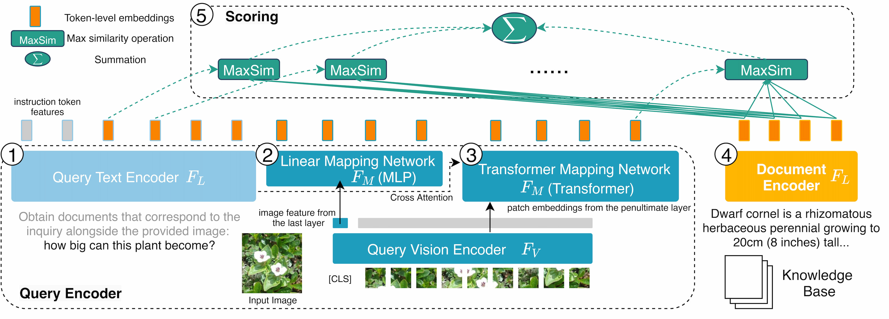

(1) the text query consists of an instruction and a question, which is encoded by a text encoder; (2) at the output of the vision encoder, a mapping network consisting of Multi-Layer Perceptrons (MLP) converts the `[CLS]' token representations into the same embedding space as the text encoder; (3) the transformer blocks take in the patch image embeddings from the penultimate layer of the vision encoder and attend to the text features by cross-attention; (4) a text encoder encodes documents in the knowledge base; (5) the scores between queries and documents are computed based on late-interaction, allowing each query token to interact with all document token embeddings.
